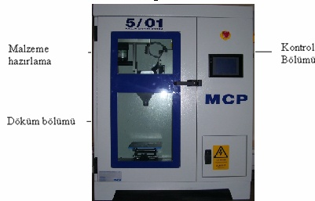
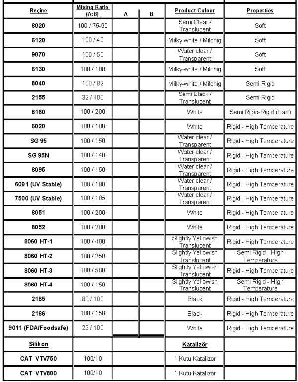

|
2.6 Kompenentlerin hazýrlanmasý katolog deðerlerine göre belirlenir. A ve B kabý olmak üzere iki tane kabýmýz vardýr. B kabý ana malzeme, A kabý ise ana malzemenin setleþtiricisidir (hardener). Malzemeleri hazýrlarken toplam gramaj %20 kadar yüksek tutulur.
Þekil 2.19 Kompenentlerin Hassas Terazide Ölçülerek Hazýrlanmasý (3)
3. VAKUM ALTINDA DÖKÜM
Kalýp bütün iþlemler tamamlandýktan sonra vakum makinesinin döküm bölümüne konulur.

Þekil 3.1 Bir Vakum Altýnda Döküm Sistemi (3)
A ve B kompenentleri; Malzeme hazýrlama bölümünde karýþtýrýcýnýn olduðu yere B gelecek þekilde, A kompenenti de diðer kýsma yerleþtirilir.
a) B kabý 10-15 dk kadar karýþtýrýlýr. Bu arada vakum devrededir.
b) A kabý B kabýna dökülecek konuma getirilir ve mikser kapatýlýr.
c) Dökülmeye baþladýðý an mikser açýlýr 10s kadar beklenir ve kaldýrýlýr.
d) Toplam 50s kadar karýþtýrýlýr (potlife baþlamýþ olur) bkz. MCP katolog
e) Mikser kapatýlýr.
f) B kabý döküm bölümüne konumlandýrýlýr.
g) Vakum kapatýlýr.
h) "Slow" tuþuna bir kere basýlýr ve kapatýlýr.
i) B kabý kendi ilk konumuna getirilir.
j) Malzeme çýkýcýlardan taþmaya baþladýðý an tekrar "slow" yapýlýr.
k) 8 saniye kadar sonra "fast" yapýlarak iþlem tamamlanýr.
Ürünün farklý pigmentte üretilmesi isteniyorsa B kabýna bir iki damla pigmentten damlatýlýr.
Reçineler ayný olmak üzere iki kalýp çift daðýtýcý kullanýlarak dökülebilir.
Tablo1. Silikon Kalýp ve Prototip Üretiminde Kullanýlan Malzemeler ve Özellikleri (1)

3.1 Döküm iþlemi tamamlandýktan sonra kalýp döküm bölümünden alýnarak ýsýtma bölümünde kurutulur.
Kurutma iþlemi genellikle 70°C'lik fýrýnda olup kalýp bekletme süresi kullanýlan kompenent'e göre deðiþiklik gösterir.
Genelde uygulama alaný küçük bir döküm kalýbýnda plastik veya metal prototiplerin vakum ya da yerçekimi yardýmýyla dökülmesidir. Normalde kullanýlan döküm malzemeleri PU, polyester, epoksi, kalay alaþýmlarý (200°C), pewter (230°C) ve çinko alaþýmlarý (400°C)'dir.
Döküm kalýbý boyutu bir kaç parçadan yüzlerce parçaya kadar deðiþebilir. Parçalarýn karmaþýklýðýna göre çok parçalý kalýplara ihtiyaç duyulabilir. Esasýnda çok parçalý kalýplar bu teknolojinin avantajlarýndan biridir.
Bu iþlem, parça yüzeylerinin tam doðrulukta kopya edilmesini saðlar. Kür (cure) iþleminden sonra kalýp ayrýlýr ve asýl model çýkartýlýr. Asýl modelin bozulmamýþ olarak çýkmasý büyük bir avantajdýr. Çünkü bu sayede diðer çoðaltmalarda da kullanýlabilir. Daha sonra kalýp birleþtirilerek tekrar vakum odasýnýn içerisine konulur ve iki karýþýmlý reçine bu kalýba dökülür. Reçine kür yapýldýktan sonra kalýp ayrýlýr ve orjinal parçanýn kopyasý elde edilmiþ olur.
Karýþým iþlemi sýrasýnda hapsolan hava, kür edilmiþ üründe boþluk oluþmamasý için ortamdan uzaklaþtýrýlmalýdýr. Karýþmýþ malzemeleri en az 22mm civa basýncý altýnda vakumlamamýz gerekir. Kabarcýklar yok oldukça parça geniþleyerek ve kendini çekerek neredeyse orjinal seviyesine döner. Köpürme durduktan yaklaþýk 2 dakika sonra gazlarýn çýkma iþlemi biter.
SONUÇ
Silikon kalýplama iþlemi, modeli oluþturulmuþ parçalarýn çoðaltýlmasý için uygun bir yöntemdir. Silikon kalýbýn üretimi yaklaþýk 2 saat ve her parça için 40 dk. zaman gereklidir. Bu yöntemde prototipi üretilmiþ bir parçanýn asýl malzemesinden veya ona yakýn bir malzemeden üretilmesi mümkündür. Böylelikle hýzlý bir þekilde parça çoðaltýlmasý yapýlabilmekte veya benzer malzemeden parçalarla testler yapýlabilmektedir. Silikon kalýplarýn ömürlerini, önemli oranda parça geometrisi ve kalýba dökülecek malzemenin aþýndýrýcýlýðý belirlemektedir. Ortalama olarak bir silikon kalýba yaklaþýk 25 adet döküm yapmak mümkün olmaktadýr.
KAYNAKLAR
1) Fardizayn Tasarým Teknopark Tic. Ltd. Þti / Ar-Ge Uygulamalarý, 2006
2) www.aytasarim.com.tr, 2006
3) www.mcp-group.com, 2006
|